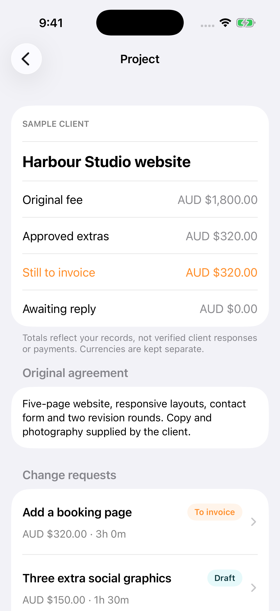

Start with what changed.
Keep the original scope beside each new request. Add the proposed fee, effort and schedule impact.
For freelancers & small studios
A client asks for “one more thing.” Record the extra work, share a clear PDF proposal and keep approved extras visible until you invoice them.
Free: two active projects + PDF proposals.
Optional one-time Plus. No subscription.


From request to invoice reference
Keep the original scope beside each new request. Add the proposed fee, effort and schedule impact.
Export a PDF through your chosen app. Mark it sent, then record the client’s actual response and source.
Approved work stays in “Still to invoice” until you add an invoice reference. Currency totals stay separate.
Response records are entered by you, not verified signatures. Scope Tally does not create invoices or collect payments.
See your local price in the app before buying. Existing projects remain readable and editable without Plus.
Yes. Project work stays on your iPhone and works offline. There are no accounts, ads or analytics. Buying and restoring Plus requires an internet connection.
Archive it to free an active slot. Archived records remain available, including approved work still to invoice.
You share the PDF through your chosen app and manually record what happened. It does not independently verify client approval, determine contract rights, calculate tax or process payment. Keep original agreements and correspondence separately.
Free resource
Use a simple record of the added work, fee, timing, response and invoice reference.
Open the free template →Sharing does not automatically send, approve or invoice a proposal. Responses are your manual records, not independently verified signatures. Keep the original agreement and correspondence separately. Invoiced does not mean paid.
Change a proposal: Drafts can be edited. Create a revision for a sent or declined proposal; the prior version stays in history. Approved and invoiced proposals stay unchanged. Record further work as a separate request.
Free project limit: Archive a completed project to free an active slot. Archived records remain available, including approved work still to invoice.
Restore Plus: Settings → Explore the one-time upgrade (or Purchase details) → Restore Purchases. Use the same Apple Account as the original purchase and an internet connection. Existing projects remain readable and editable if Plus cannot be verified.
Keep your records: Settings → Export backup. Store the JSON file privately in Files. Restore a backup replaces the current library, so export first if you need both copies. Keep a backup before uninstalling or changing phones.
Open a support request with the app name, iOS version and steps to reproduce. GitHub issues are public: do not include client names, proposal details, private files, receipts, passwords or other sensitive information. Apple handles billing and refund support.
Effective 11 November 2026 · Published by James Kershaw
Your project data: Scope Tally stores project and client names, agreement text, fees, estimates, response references, invoice references and your business name in local app storage. We do not operate an app server or receive these records. No account, advertising, analytics, tracking, contact access or location collection is used.
Purchases: Apple's StoreKit displays products, processes payments and verifies purchases. Apple processes account and payment information under its own privacy policy. Scope Tally does not receive card details. It checks Apple's verified transactions to unlock Plus.
Sharing and backups: PDF and JSON exports leave the app when you choose a destination. The receiving service's privacy policy applies. These files can contain client details; choose a private destination. Apple device backups may include app data depending on your settings. Scope Tally does not provide its own cloud sync.
Support and website: GitHub Pages hosts this site. GitHub may process connection information under its privacy statement. We add no analytics or cookies. Public support issues can be seen by others; do not post private information.
Deleting data: Settings → Delete all projects removes your local library after confirmation. Uninstalling also removes local app data. Manage exported files and Apple device backups separately. Your Apple purchase is separate from project data. Use the support link above for questions about this policy.
Plus is a non-consumable, one-time in-app purchase. It has no recurring charge and can be restored with the same Apple Account. Apple's localized price is shown before confirmation. Apple's standard EULA applies.
Scope Tally is a recordkeeping tool. It does not determine contract rights, calculate tax, verify approvals, process client payments or send reminders to clients.